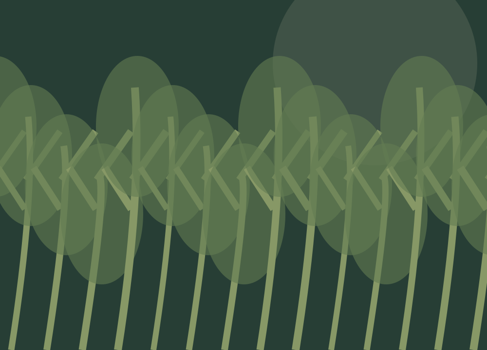
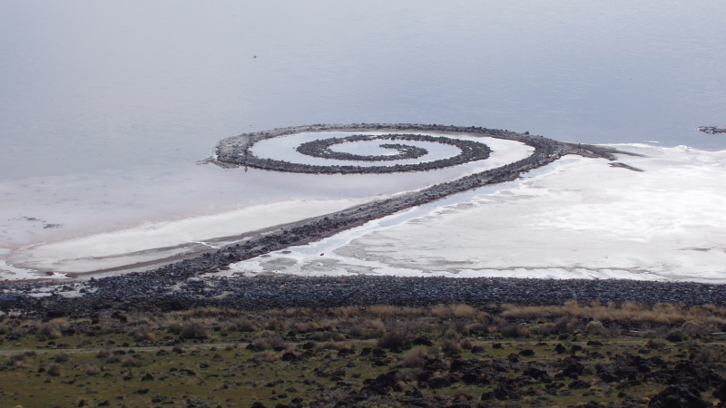

Raízes na Land Art: a arte começa a sair dos museus e ocupar paisagens naturais.
ECOARTE
Arte, natureza e consciência ambiental
UMA EXPOSIÇÃO PARA REPENSAR NOSSO LUGAR NO PLANETA
Arte, Natureza e
Consciência Ambiental
Arte, natureza e consciência ambiental
UMA EXPOSIÇÃO PARA REPENSAR NOSSO LUGAR NO PLANETAUma expressão artística que une criatividade e consciência ambiental.
Materiais naturais, reciclados ou reaproveitados nos ajudam a refletir sobre a relação entre ser humano e meio ambiente.
Raízes na Land Art: a arte começa a sair dos museus e ocupar paisagens naturais.
Terra, pedras e território tornam-se parte da criação artística.
Poluição, desmatamento e consumismo ganham espaço diante das preocupações ambientais.
Práticas ecológicas conectam criação, educação e participação comunitária.

A natureza deixa de ser apenas retratada.
Ela se torna espaço e material.
Folhas, pedras,
madeira e terra.
Plástico, vidro,
metal e papel.
Obras que mudam, desaparecem
ou voltam à natureza.
Crítica, educativa e
frequentemente comunitária.
Explore a galeria. Cada obra abre uma nova perspectiva.
Uma enorme espiral de pedras no Grande Lago Salgado, nos Estados Unidos.
A paisagem faz parte da obra.Iniciado em 1982, o projeto plantou milhares de árvores em Kassel, Alemanha, transformando uma intervenção artística em ação ambiental.
Uma semente. Uma cidade. Uma transformação.Esculturas efêmeras feitas de folhas, gelo, galhos e pedras.
A natureza cria a obra —
e também a desfaz.
Artista polonês naturalizado brasileiro, utilizou troncos queimados e raízes para denunciar queimadas e desmatamento.
A matéria ferida
torna-se denúncia.
Com catadores do Jardim Gramacho, no Rio de Janeiro, materiais descartados se transformaram em enormes retratos.
Reaproveitar materiais. Reconhecer pessoas.Aproxima as pessoas dos debates ambientais.
Mostra possibilidades de reaproveitamento.
Estimula respeito pela natureza.
Educação e mudança social por meio da arte.
Mais do que embelezar espaços,
a ecoarte educa, questiona
e inspira.
ARTE PODE TRANSFORMAR NOSSA
RELAÇÃO COM O PLANETA.
Arte.
Natureza.
Transformação.